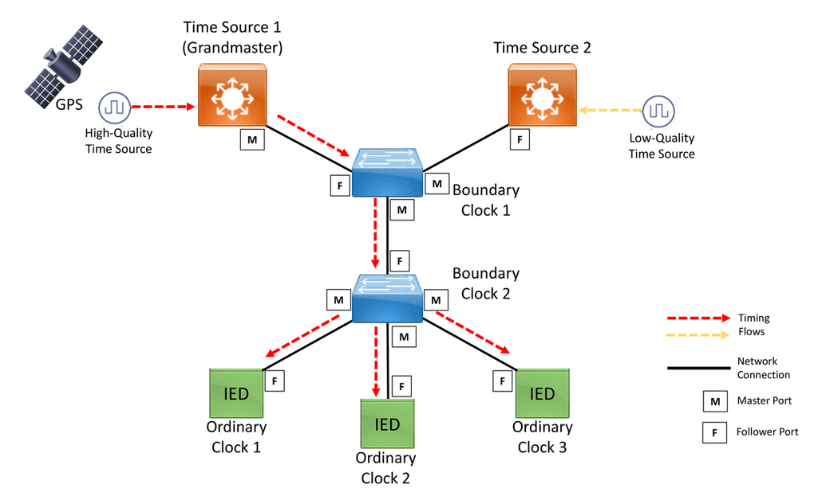
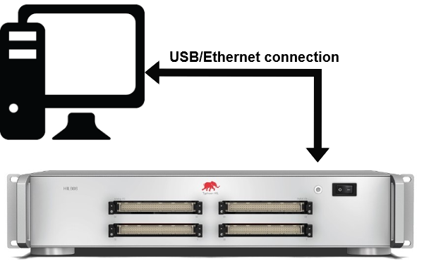
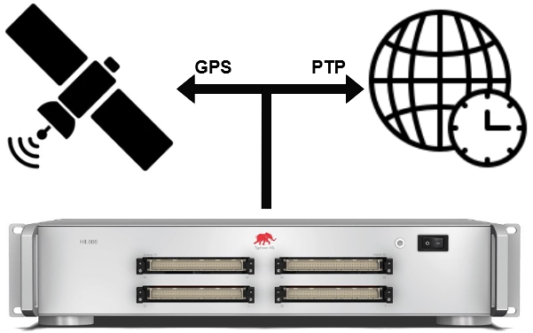
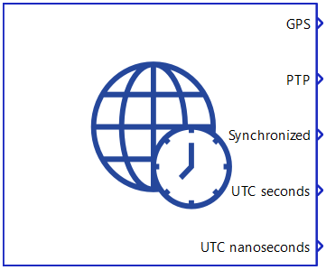

Time synchronization
This section describes how to perform time synchronization of HIL device(s).
IRIG-B
IRIG-B is a serial date-time format consisting of a 1-second frame that contains 100 pulses divided into fields. The time-synchronized device decodes the second, minute, hour and day fields and sets its internal time clock upon detecting the valid time data in the IRIG time mode.
HIL devices support unmodulated IRIG-B input. The unmodulated IRIG-B time-code is IRIG-B00x. The last digit, either 2 or 0, indicates the coded expression(s).
The time-code format IRIG-B002 is a binary-coded decimal (BCD) timecode (HH, MM, SS, DDD). This format represents the traditional, or legacy IRIG-B.
The time-code format IRIG-B000 consists of a BCD timecode (HH, MM, SS, DDD), plus straight binary seconds (SBS) of the day (0-86400 s), and also contains control function extensions that include data for: year, leap seconds, daylight time, UTC time offset, time quality and parity (odd).
When using the IRIG-B000 time-code format, the HIL device will only parse timecode data.
Time synchronization can be achieved with a precision of 100th of a second. This means that the HIL device will decode the tens of seconds, second, minute, hour and day fields and will set the internal time clock upon detecting the valid time data in the IRIG time mode at the resolution of 10 ms.
PTP
The Precision Time Protocol (PTP) is a protocol used to synchronize clocks throughout a computer network. On a local area network, it achieves clock accuracy in the sub-microsecond range, making it suitable for measurement and control systems. PTP is described in the IEE 1588 standard.
The IEEE 1588 standards describe a hierarchical master–slave architecture for clock distribution. Under this architecture, a time distribution system consists of one or more communication media (network segments), and one or more clocks. An ordinary clock is a device with a single network connection and is either the source of (master or leader) or destination for (slave or follower) a synchronization reference. A boundary clock has multiple network connections and can accurately synchronize one network segment to another. A synchronization master is selected for each of the network segments in the system. The root timing reference is called the grandmaster. The grandmaster transmits synchronization information to the clocks residing on its network segment.
An example of a PTP network architecture is shown in Figure 1.

IEEE 1588 includes a profile concept defining PTP operating parameters and options. Several profiles have been defined for applications including telecommunications, electric power distribution and audiovisual.
HIL devices are capable of working only as an Ordinary Clock.
Time synchronization usage
Three levels of synchronization can be defined for the HIL device:
-
Full device synchronization
HIL device capabilities when fully synchronized include:
- Synchronizing the internal device clock, which helps prevent drifts over long periods of time
- Simulation start time synchronization (the simulation will start on the second rollover, i.e. at the beginning of the next second)
- Real time trigger timestamps for signal capture
- Internal system time synchronization
- Communication protocols synchronization
Table 1. Device support and configuration Synchronization source HIL device Time Synchronization component configuration PTP HIL101, HIL404, HIL506, and HIL606 With PTP as the synchronization source, select any available ethernet port and a desired PTP configuration HIL602+ and HIL604 With PTP as the synchronization source, select ethernet port 2 and a desired PTP configuration IRIG-B HIL604, HIL506, and HIL606 Select "IRIG-B" as the synchronization source In case of full device synchronization of HIL602+ and HIL604 devices over PTP, ethernet port 2 cannot be used for any other application, except for the IEC 61850 Sampled Values protocol.
Important: In order to achieve full system synchronization over PTP, it is necessary to use the hardware time stamping method. -
Internal system time synchronization
Some applications in the Typhoon HIL toolchain use the HIL device internal system time as a synchronization source. For this reason, the internal system time of a HIL device can be synchronized using PTP, even on devices that do not support full device synchronization.
Applications that are synchronized by the internal system device time:
Time Synchronization component configuration for internal system time synchronization over PTP:
- Select "PTP" as the synchronization source
- Select the ethernet port 1
- Select a preset or configure a custom PTP configurationImportant: In order to synchronize the internal system time on a device that does not support full device synchronization, it is necessary to use the software time stamping method.
-
Individual communication protocols synchronization
For supported protocols, it is possible to configure individual, application-based synchronization without having full system synchronization. Instructions for each protocol are located on their respective documentation pages.
Communication protocols that support application-based time synchronization include:
To better understand the usage of time synchronization, three cases will be described:
- HIL working in standalone mode (without synchronization)
- HIL connected to PC (without synchronization)
- HIL with IRIG-B/PTP connection
| HIL Configuration | Description |
|---|---|
HIL working in standalone mode |
When the HIL is tuning during standalone boot, without a connection to the PC, the HIL time will start counting from January 1, 1970. All the network messages (coming from the communication protocols) will be stamped with this time value. |
 HIL connected to PC |
When the HIL is connected to the PC, the current time is read from the PC and that time is applied to the HIL. |
 HIL with IRIG-B/PTP connection |
When IRIG-B/PTP is connected, the exact time information is received every second and the HIL time is updated constantly, ensuring that all network messages have the correct time stamp. |
Time Synchronization component
The Time Synchronization component is used to configure the time synchronization on a HIL device and monitor its status.

| Tab | Property name | Description |
|---|---|---|
| General | Sync source | Choose whether to use PTP or IRIG-B as the synchronization source |
| Ethernet port | Select the ethernet port through which the PTP signal will be received | |
| Execution rate | Signal Processing execution rate | |
| Enable VLAN tagging | Choose whether to enable VLAN tagging for PTP messages or not. If enabled, outbound PTP messages will be tagged with the defined VLAN priority and ID values, while the inbound messages are filtered based on the defined VLAN ID. | |
| VLAN priority | Define the network priority of VLAN tagged PTP messages. Allowed values are from 0 (lowest) to 7 (highest). | |
| VLAN ID | Defines the VLAN identifier used to distinguish other VLANs within the same network. Allowed values are from 0 to 4094 | |
| PTP Options | PTP configuration | Choose between preconfigured and custom PTP configuration options. Custom options are expected to be provided as a dictionary (example). PTP is based on the Linux ptp4l library and the options can be changed according to the library specification. |
Predefined IEC 61850-9-3 PTP options include:
- measurement of the link delay is performed by peer-to-peer (Pdelay) message exchange
- domainNumber: 0 (default), 93 (when a conflict exist with another PTP time distribution)
- Announce interval: 1 s (fixed)
- Sync interval: 1 s (fixed)
- Pdelay interval: 1 s (fixed)
- Announce receipt time-out: 3 s (fixed)
- priority1: 255 for clientOnly
- priority2: 255 for clientOnly
{
"time_stamping": "hardware",
"network_transport": "L2",
"clientOnly": "1",
"priority1": "255",
"priority2": "255",
"domainNumber": "0",
"delay_mechanism": "E2E",
"logAnnounceInterval": "0",
"logSyncInterval": "0",
"logMinPdelayReqInterval": "0",
"announceReceiptTimeout": "3"
}The Time Synchronization component has five outputs:
- GPS - Indicates presence of the external IRIG-B source. A value of 1 indicates that the system is actively being synchronized.
- PTP - Indicates presence of the external PTP source. A value of 1 indicates that the system is actively being synchronized.
- Synchronized - Indication whether the HIL device has achieved full synchronization or not. The output value will be 1 if the device was actively being synchronized by the selected external source at simulation start. If synchronization is lost at any point during the simulation, the HIL device will be considered out of sync for the remainder of the simulation, even if synchronization is reestablished.
- UTC seconds - A 32-bit unsigned integer that represents the number of seconds that have elapsed since January 1, 1970, not counting leap seconds.
- UTC nanoseconds - A 32-bit unsigned integer that represents the sub-second part the current UTC timestamp, provided in nanoseconds.
Multi HIL Setup
In a multi HIL setup, it is only required to configure time synchronization for the master HIL device. Other HIL devices in the setup will be synchronized through it.
However, there are some limitations when synchronizing slave/follower HIL devices through the master HIL device, including:
- Internal system time on slave/follower HIL devices will not be updated by the master HIL device
- IEC 61850 Sampled Values protocol on slave/follower HIL devices will be synchronized on HIL101, HIL404, HIL602+, HIL604, HIL506, and HIL606 devices
To overcome these limitations, slave/follower HIL devices can be additionally configured for dedicated Internal system time synchronization or Individual protocol synchronization regardless of whether the master HIL device is synchronized or not.
The Synchronized output of the Time Synchronization will always be 0 on slave/follower HIL devices.
Virtual HIL support
Virtual HIL does not support time synchronization. When using a Virtual HIL environment (e.g. when running the model on a local computer), the configuration of the Time Synchronization component will be discarded and its outputs will be zeroed.
References
- Industrial Ethernet Book, Safeguarding PTP Protocol with Parallel Redundancy Protocol, September 20, 2021